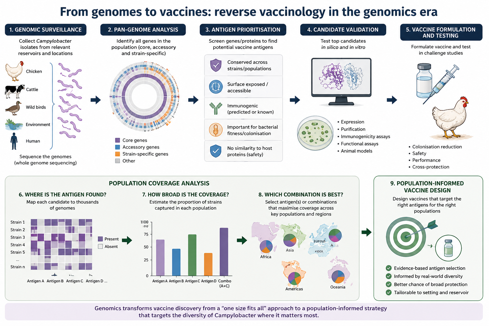

The question
If chickens are such an important source of human infection, why don't we just vaccinate them?
The logic is appealingly simple: reduce Campylobacter in poultry, reduce the number of bacteria entering the food chain, and reduce opportunities for human infection. Researchers have pursued that idea for decades. The difficulty is that almost every part of the problem—from the biology of the bacterium to the biology of the host—turns out to be more complicated than it first appears.
The chicken is not simply a container
Chickens often carry very high numbers of Campylobacter in the gut without obvious clinical disease. That has encouraged the shorthand that Campylobacter is merely a harmless commensal of poultry. Work from Paul Wigley, Lisa Williams and colleagues has helped show that the relationship is more nuanced: strain background, chicken breed and host response can influence gut health, inflammation, colonisation and performance.
That matters for vaccination. Reducing colonisation could have public-health value by lowering the bacterial burden entering the food chain, while the consequences for the bird itself may depend on the particular host–pathogen combination.
Elimination is not the only useful endpoint
A poultry vaccine does not necessarily need to produce sterilising immunity to be valuable. A substantial reduction in intestinal colonisation could reduce opportunities for carcass contamination during processing and therefore reduce human exposure. In practice, the relevant outcome may be a reduction in carriage, transmission or persistence rather than complete clearance.
Which Campylobacter are we vaccinating against?
Campylobacter jejuni is not a single homogeneous target. Poultry populations contain many genetically distinct lineages, and frequent recombination continually reshuffles that diversity. A vaccine that performs well against one set of strains may therefore perform differently against another population or in another production system.
This is where population genomics becomes useful: genomic surveillance can tell us which lineages are circulating, how stable those populations are and whether candidate vaccine components are likely to cover the diversity that actually matters.
Using genomics to tailor vaccination
In our 2024 npj Vaccines study, we explored a population-informed approach to autogenous vaccination. Genomic surveillance was used to characterise the Campylobacter strains circulating within a poultry population and inform the selection of strains for a tailored vaccine.
Instead of asking for one vaccine against an abstract species, we can ask which bacterial population we are trying to control in a particular setting.
This approach also highlights an important distinction: genomics can help decide which strains should be represented in a vaccine, but it can also help identify which antigens might be useful across many strains.
The host matters too
The bacterial genome is only half the story. Vaccines act through the host. Chickens given the same vaccine can respond very differently, and factors including immune function, host genetics, age and the gut microbiome may influence whether vaccination reduces colonisation.
Experimental work has shown that responder and non-responder chickens can differ in immune function and caecal microbiota, and that manipulating the microbiota can alter vaccine-induced responses. This makes vaccine performance an interaction between pathogen, host, microbiome and environment rather than simply a property of the antigen.
From population genomics to reverse vaccinology
Reverse vaccinology turns the traditional discovery process around. Instead of starting with individual bacterial strains and testing components one by one, we can begin with large collections of genomes and search systematically for proteins that could make useful vaccine antigens.

Candidate targets can be prioritised because they are conserved across relevant populations, predicted to be surface exposed or accessible to the immune system, immunogenic, involved in colonisation or bacterial fitness, and sufficiently distinct from host proteins. Population genomics then lets us ask a question that is often missed during early vaccine discovery: how much of the real circulating population would this target actually cover?
That makes it possible to compare individual antigens and antigen combinations across lineages, reservoirs, regions and countries before moving the strongest candidates into experimental validation.
Why vaccinate the chicken rather than the human?
Poultry vaccination is attractive because it targets transmission before Campylobacter enters the food chain. But it is not the only possible strategy. Human vaccines could instead aim to prevent disease directly.
The epidemiological problem is different. Exposure varies greatly between populations, protective immunity remains incompletely understood, and repeated infection and asymptomatic carriage are common in many high-burden settings, particularly in early childhood. That raises a different set of questions about who should be vaccinated, when vaccination should occur and which bacterial populations a human vaccine would need to cover.
The two approaches are not mutually exclusive. Poultry vaccination could reduce exposure, while human vaccination could reduce disease in groups where exposure is difficult to prevent.
A vaccine still has to work in the real world
Even an excellent antigen is only the beginning. A poultry vaccine has to work early in life, be affordable at the scale of modern poultry production, be practical to administer and remain effective against the diversity circulating in commercial flocks. A biologically elegant vaccine that cannot be deployed at scale will not reduce the burden of human disease.
From vaccine discovery to disease prevention
These questions fit naturally within the Campylobacter Control Campaign (CCC). The aim is not simply to find a promising antigen, but to combine One Health sampling, epidemiology, population genomics, source attribution and intervention research to determine where different control measures are likely to have the greatest impact.
For vaccines, that means asking a broader question: what should we target, who should we vaccinate, and where would vaccination prevent the most human disease?